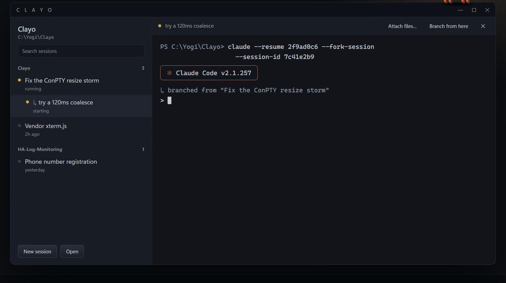
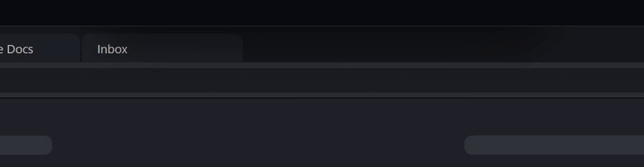

Every Claude Code and Codex session in one Windows window, plus an island that tells you which one needs you.

Sessions grouped by folder on the left, with branches nested under their parent. The real Claude Code terminal on the right.
Context
Working with AI coding agents means running four or five sessions at once, each in its own terminal. One is waiting for a permission, one finished ten minutes ago, and you're in the browser.
A session stuck on a permission prompt does nothing until you notice. The cost isn't the agent's time, it's yours: switching windows to check.
Goal: one window for every session, and a signal that reaches you wherever you are, without interrupting what you're doing.

The island: it drops in when a session needs you and never takes keyboard focus.
Architecture
Hover or tap any box for a plain-English explanation. The moving dots are data flowing between parts.
Key decisions
Written as short architecture decision records: what the situation was, what I chose, and what it cost.
Build log
The real history, condensed from 40 commits and 15 pull requests.
Security
Before posting it publicly, I audited Clayo for security and memory issues and fixed them in one release.
Outcome